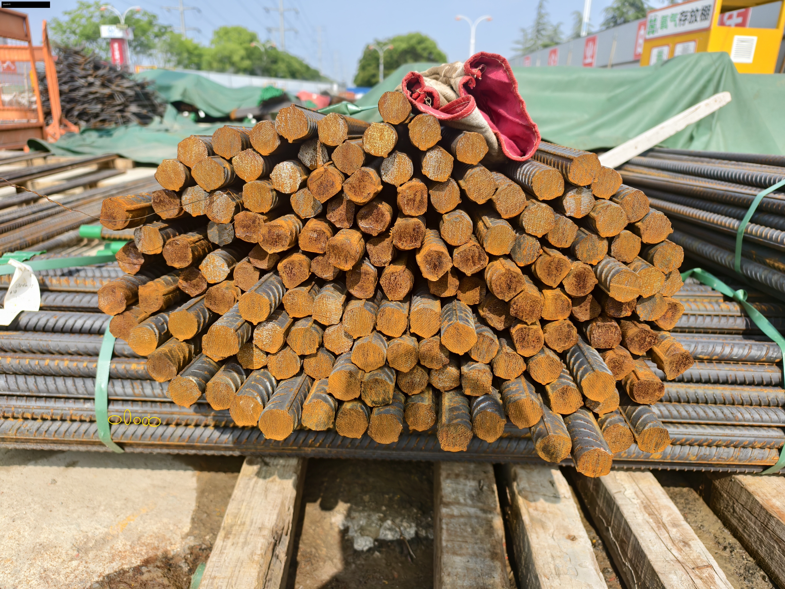
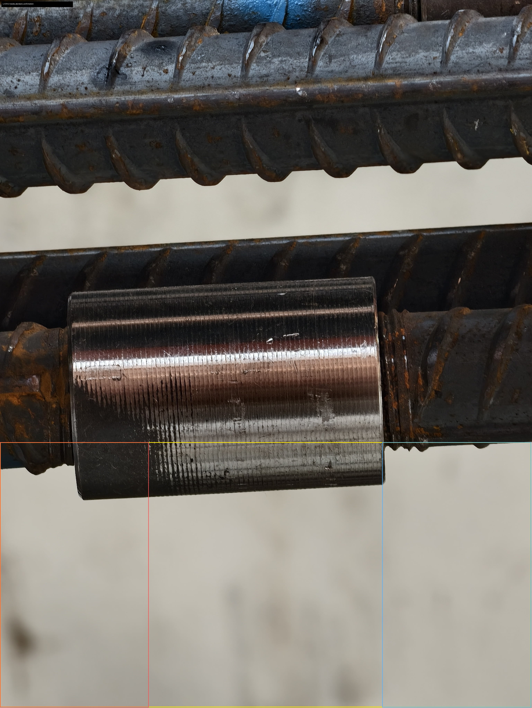
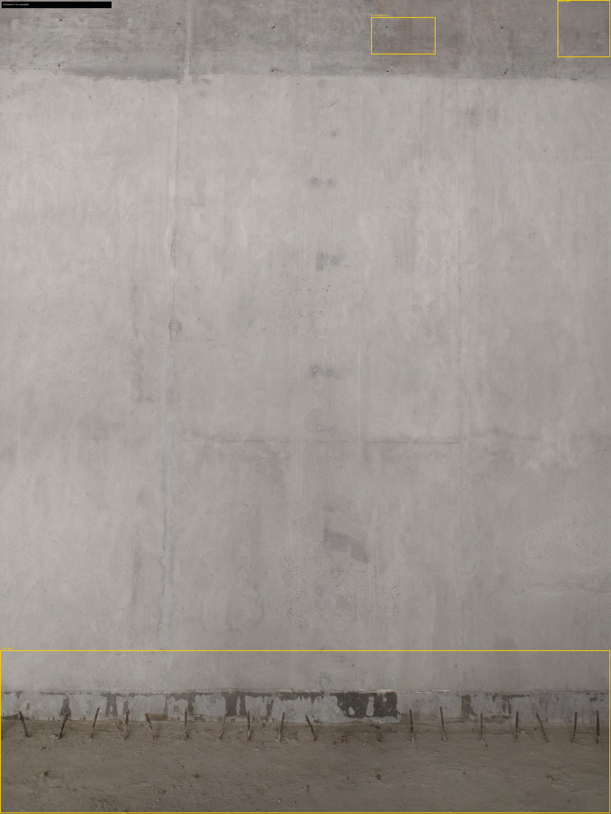

AI质监 Demo 交付说明
给领导和建设公司看的版本，不是开发调试数据。
一句话结论
本轮已经形成可演示的现场 AI 质检辅助 Demo。系统可以完成素材归类、拍照质量检查、标注图生成、结构化结果输出和人工复核状态标记。
但当前交付目标不是“自动验收合格/不合格”，而是“辅助质检 Demo + 现场补样 + 规则确认”。CSV/JSON 只作为底层证据链，不应该作为主要汇报材料。
这次到底交付了什么
| 交付物 | 给谁看 | 打开后能看懂什么 |
|---|---|---|
| 领导汇报版 Word | 领导、项目负责人、建设公司 | 实现了哪些 AI 质检场景、现场跑出来什么、怎么验收、哪些不能承诺。 |
| 中文图文看板 HTML | 会议演示、内部讨论 | 三类场景的代表标注图、中文结论、验收边界和下一步。 |
| 底层 CSV/JSON | 开发、复核、留痕 | 机器结果和证据链。不是面向领导的正文交付物。 |
已经实现的能力
| 场景 | 现在能做什么 | 当前现场结果 | 验收边界 |
|---|---|---|---|
| 钢筋材料点数 | 识别端面清晰照片中的钢筋端面候选点，输出标注图、候选数量、置信度和复核状态。 | 材料相关 7 张：6 张需要补拍，1 张需要人工复核。 | 只验收端面清晰照片；侧面、遮挡、裁切照片不能当精确数量。 |
| 钢筋套筒露丝检查 | 定位套筒和左右露丝区域，估算左右可见丝扣，支持阈值配置。 | 套筒 5 张全部生成标注图；因项目露丝阈值未确认，全部为“需确认标准”。 | 未确认项目阈值前不输出合格/不合格；无比例尺不报毫米级外露长度。 |
| 混凝土表面疑似异常 | 圈选疑似异常区域，输出标注图、异常提示和测量状态。 | 混凝土 10 张全部生成疑似区域标注。 | 当前只验收“疑似异常提示”；不承诺蜂窝、麻面、裂缝等具体缺陷精判。 |
| 通用流程 | 素材归类、拍照质量检查、复核状态、报告生成。 | 共 27 个媒体文件；14 个可进入分析，7 个需复核，6 个需补拍。 | 这是辅助质检流程，不替代质检员最终验收签字。 |
场景一：钢筋材料点数

当前实现：
• 能识别端面照片中的钢筋端面候选点。
• 能输出标注图、候选数量、置信度和人工复核状态。
• 对侧面堆放、遮挡严重、裁切严重的照片，会标记为需要补拍或人工复核。
现场结果：
• 当前 7 张材料相关照片中，6 张是侧面或遮挡视角，系统标记为需要补拍。
• 1 张端面图可以生成候选点，但由于候选区域不够稳定，系统标记为需要人工复核。
验收方式：
• 通过：端面清晰、钢筋端头完整，系统能输出标注图和候选数量。
• 不通过：侧面堆放照片还直接输出精确点数。
下一步：
• 现场补拍端面照片。
• 和建设公司确认点数口径：按根、按捆、按批次，还是按收料单明细行。
场景二：钢筋套筒露丝检查

当前实现：
• 能定位套筒大致位置。
• 能标出左侧、右侧露丝区域。
• 能估算左右可见丝扣数量。
• 支持配置最大允许露丝数阈值。
• 如果阈值未配置，系统只输出“需确认标准”，不输出合格/不合格。
现场结果：
• 当前 5 张套筒照片都生成了标注图和左右露丝估计。
• 因为项目露丝标准尚未确认，5 张全部为“需确认标准”。
• 有照片存在遮挡或两侧不完整，系统会额外提示“套筒两侧未完整可见”或“存在遮挡”。
验收方式：
• 通过：能标出套筒和左右露丝区域；配置阈值后可以输出疑似不合规。
• 不通过：没有项目阈值就直接判合格/不合格。
下一步：
• 建设公司确认不同钢筋直径、套筒类型下允许外露几扣或多少毫米。
• 如果要求长度测量，需要现场放比例尺或提供固定标定方式。
场景三：混凝土表面疑似异常

当前实现：
• 能圈选混凝土表面疑似异常区域。
• 支持 overview 和 close-up 图片关联。
• 输出异常提示、标注图、人工复核状态。
• 没有比例尺时，不输出宽度、长度或面积。
现场结果：
• 当前 10 张混凝土照片都生成了疑似区域标注。
• 当前照片主要是正常表面、色差、修补痕迹、接缝、水印等。
• 缺少明确的蜂窝、麻面、露筋、孔洞、裂缝等正样本。
验收方式：
• 通过：能圈出疑似异常区域，并提示人工复核。
• 不通过：把疑似区域直接判成蜂窝、麻面、裂缝等最终缺陷结论。
下一步：
• 补充蜂窝、麻面、露筋、孔洞、裂缝等正样本。
• 有足够样本后，再做具体缺陷类别模型。
怎么验收
| 验收项 | 验收方法 | 通过标准 |
|---|---|---|
| 技术验收 | 运行单元测试和 OpenSpec 校验。 | 36 个测试通过；OpenSpec strict 校验 valid。 |
| 图像结果验收 | 打开 Word 或 HTML，看三类场景标注图。 | 能看懂标注含义，且错误边界写清楚。 |
| 业务验收 | 建设公司确认点数口径、套筒露丝阈值、是否接受补拍规范。 | 确认后才能进入“试点验收版”。 |
| 反向验收 | 检查系统有没有过度承诺。 | 未确认阈值不判合格；无比例尺不报尺寸；侧面钢筋不报精确数量。 |
会议必须确认
| 问题 | 建议问法 | 为什么重要 |
|---|---|---|
| 钢筋点数口径 | AI 输出的数量是按根、按捆、按批次，还是对照收料单明细行？ | 不确认口径，就无法判断 AI 数量是否可用于收料或库存核对。 |
| 套筒露丝阈值 | 不同钢筋直径、套筒类型，允许外露几扣或多少毫米？以哪本规范或项目标准为准？ | 没有阈值只能做辅助定位，不能判合格/不合格。 |
| 拍照规范 | 是否接受要求现场按端面、完整套筒两侧、overview + close-up、带比例尺等规则补拍？ | AI 能力很大程度取决于照片角度和尺度信息。 |
| 交付形态 | 第一阶段要离线脚本、本地网页、H5 上传、Android APK，还是 iOS？ | iOS 原生 App 分发周期长，不适合做第一轮快速试点前置条件。 |
接下来要做什么
| 时间点 | 要做的事 | 谁来确认 |
|---|---|---|
| 会前 | 挑每个场景 2 到 3 张代表图片，准备原图、标注图、中文结论。 | 内部项目组 |
| 会上 | 确认钢筋点数口径、套筒露丝阈值、拍照规范、交付形态。 | 建设公司/质检负责人 |
| 会后 1 周 | 按拍照规范补样，每类至少补 50 到 100 张有效图，包含正常和异常。 | 现场人员和质检员 |
| 下一版 Demo | 把规则写入配置，输出更接近验收流程的复核清单。 | 技术组和质检负责人 |
| 产品化 | 优先 H5 或本地网页；Android 可作为快速 App 路线；iOS 后置。 | 领导决策 |
对领导建议怎么说
可以这样说：
• 三个场景已经形成可运行 Demo。
• 当前能输出标注图、结构化结果和人工复核状态。
• 适合先做辅助质检、补样和规则确认。
• 套筒露丝必须先确认项目阈值，再进入合格/不合格判断。
不要这样说：
• 已经能自动完成正式质量验收。
• 混凝土缺陷已经能稳定分类。
• 钢筋侧面堆放照片可以精确点数。
• 套筒露丝不用确认标准就能判定。
推荐结论
当前项目具备继续推进价值。下一阶段建议定义为“辅助质检 Demo + 现场补样 + 规则确认”，先跑通拍照规范、业务阈值和人工复核流程，再决定是否产品化到 H5、Android 或 iOS。